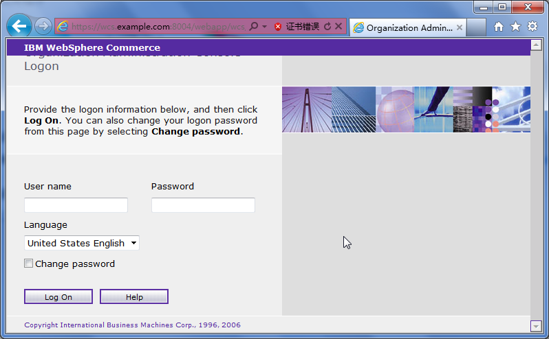

# ./apachectl -k start -f /opt/IBM/WebSphere/CommerceServer70/instances/demo/httpconf/httpd.conf [root@wcs ~]# /opt/IBMIHS/bin/apachectl -k start -f /opt/IBM/WebSphere/CommerceServer70/instances/demo/httpconf/httpd.conf [root@wcs ~]# su - wcuser [wcuser@wcs bin]$ pwd /opt/IBM/WebSphere/AppServer/profiles/demo/bin [wcuser@wcs bin]$ ./startServer.sh server1 $ grep error /opt/IBM/WebSphere/AppServer/profiles/demo/logs/server1/startServer.log | wc -l 0 # netstat -nlp | grep "0 0.0.0.0:" # netstat -nlp | egrep "httpd|java" [root@wcs ~]# netstat -nlp | egrep "httpd|java" | egrep "0 192.168.3.198:|0 0.0.0.0:" https://wcs.example.com:8000/lobtools https://wcs.example.com:8000/accelerator https://wcs.example.com:8002/adminconsole https://wcs.example.com:8004/orgadminconsole https://wcs.example.com:9063/ibm/console/logon.jsp (configadmin) # sqlplus SQL> select * from site; IBM Bug Oracle默认端口是50000，更改oralce端口密码1521 /opt/IBM/WebSphere/CommerceServer70/instances/demo/xml/demo.xml /opt/IBM/WebSphere/CommerceServer70/instances/demo/properties/createInstance.properties /opt/IBM/WebSphere/AppServer/profiles/demo/installedApps/WC_demo_cell/WC_demo.ear/xml/config/wc-server.xml
https://wcs.example.com:8002/adminconsole
 |
https://wcs.example.com:8004/orgadminconsole
|  |
./config_ant.sh -buildfile /opt/IBM/WebSphere/CommerceServer70/components/common/xml/enableFeature.xml -DinstanceName=demo -DfeatureName=foundation -DdbUserPassword=passw0rd -DdbaPassword=system*wcsdba $ egrep "error|Error|exception|Exception" ../instances/demo/logs/enablefoundation_2011.05.31_15.05.32.871.log
./config_ant.sh -buildfile /opt/IBM/WebSphere/CommerceServer70/components/common/xml/enableFeature.xml -DinstanceName=demo -DfeatureName=management-center -DdbUserPassword=passw0rd egrep "error|Error|exception|Exception" ../instances/demo/logs/enablemanagement-center_2011.05.31_15.49.35.040.log https://wcs.example.com:8000/lobtools
./config_ant.sh -buildfile /opt/IBM/WebSphere/CommerceServer70/components/common/xml/enableFeature.xml -DinstanceName=demo -DfeatureName=store-enhancements -DdbUserPassword=passw0rd [wcuser@wcs bin]$ egrep "error|Error|exception|Exception" ../instances/demo/logs/enablestore-enhancements_2011.05.31_16.28.23.659.log
[wcuser@wcs bin]$ ./checkEnablementStatus.sh -DinstanceName=demo -DdbUserPassword=passw0rd
所有版本都应该是 7.0.0.11
/opt/IBM/WebSphere/AppServer/bin/versionInfo.sh /opt/IBM/WebSphere/Plugins/bin/versionInfo.sh /opt/IBMIHS/bin/versionInfo.sh